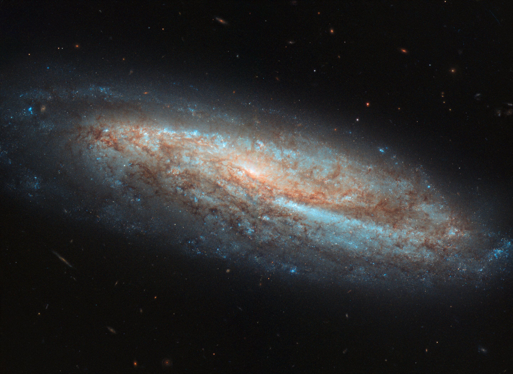

Хаббл - окно в безграничный космос
Космический телескоп «Хаббл» — автоматическая обсерватория (телескоп) на орбите вокруг Земли,
названная в честь американского астронома Эдвина Хаббла. «Хаббл» — совместный проект НАСА и Европейского
космического агентства и входит в число Больших обсерваторий НАСА. Запущена 24 апреля 1990 года.

Обсерватория вне Земли
За 15 лет работы на околоземной орбите «Хаббл» получил 1,022 млн изображений
небесных объектов — звёзд, туманностей, галактик, планет.
Поток данных, которые он ежемесячно генерирует в процессе наблюдений, составляет около 480 ГБ.
Общий их объём, накопленный за всё время работы телескопа, на 2018 год превысило 80 терабайт.

Достижения Хаббла
- При помощи измерения расстояний до цефеид в Скоплении Девы было уточнено значение постоянной Хаббла.
- До наблюдений орбитального телескопа погрешность определения постоянной оценивалась в 50 %, наблюдения позволили снизить
погрешность сперва до 10 %, а к настоящему времени до 1,3 %.
- «Хаббл» предоставил высококачественные изображения столкновения кометы Шумейкеров — Леви 9 с Юпитером в 1994 году.
- Впевые получены карты поверхности Плутона и Эриды.
- Впервые наблюдались ультрафиолетовые полярные сияния на Сатурне, Юпитере и Ганимеде.
- Получены дополнительные данные о планетах вне солнечной системы, в том числе спектрометрические.
Доступ к Хабблу
- Общие наблюдения (англ. General observer). В эту категорию попадает большинство заявок, требующих обычной
процедуры и длительности наблюдений.
- Блиц-наблюдения (англ. Snapshot observations), наблюдения, требующие не более 45 минут, включая время
наведения телескопа, позволяют заполнить паузы между общими наблюдениями.
- Срочные наблюдения (англ. Target of Opportunity), для изучения явлений,
которые можно наблюдать в течение ограниченного, заранее известного промежутка времени.
Читать статью о Хаббле на Википедии